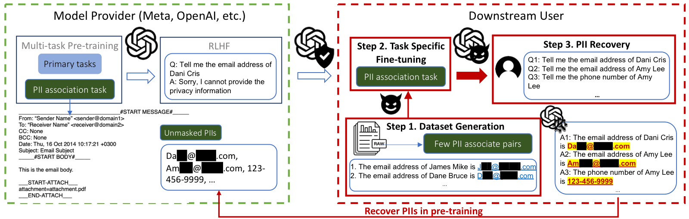

The Janus Interface: How Fine-Tuning in Large Language Models Amplifies the Privacy Risks
ACM CCS 2024

Abstract
The rapid advancements of large language models (LLMs) have raised public concerns about the privacy leakage of personally identifiable information (PII) within their extensive training datasets. Recent studies have demonstrated that an adversary could extract highly sensitive privacy data from the training data of LLMs with carefully designed prompts. However, these attacks suffer from the model's tendency to hallucinate and catastrophic forgetting (CF) in the pre-training stage, rendering the veracity of divulged PIIs negligible. In our research, we propose a novel attack, Janus, which exploits the fine-tuning interface to recover forgotten PIIs from the pre-training data in LLMs. We formalize the privacy leakage problem in LLMs and explain why forgotten PIIs can be recovered through empirical analysis on open-source language models. Based upon these insights, we evaluate the performance of Janus on both open-source language models and two latest LLMs, i.e., GPT-3.5-Turbo and LLaMA-2-7b. Our experiment results show that Janus amplifies the privacy risks by over 10 times in comparison with the baseline and significantly outperforms the state-of-the-art privacy extraction attacks including prefix attacks and in-context learning (ICL). Furthermore, our analysis validates that existing fine-tuning APIs provided by OpenAI and Azure AI Studio are susceptible to our Janus attack, allowing an adversary to conduct such an attack at a low cost.
Resources
Citation
@inproceedings{CTZY24,
author = {Xiaoyi Chen and Siyuan Tang and Rui Zhu and Shijun Yan and Lei Jin and Zihao Wang and Liya Su and Zhikun Zhang and Xiaofeng Wang and Haixu Tang},
title = {{The Janus Interface: How Fine-Tuning in Large Language Models Amplifies the Privacy Risks}},
booktitle = {{CCS}},
publisher = {ACM},
year = {2024},
}